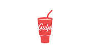

Generalmente a la hora de programar nos topamos con miles de tareas que tenemos que hacer tanto antes asi como despuesd e generar codigo, muchas veces si bien no es dificil es perdida de tiempo que bien podriamos ocupar en otras tareas como PROGRAMAR. Es ahi donde podemos tener a gulp como uno de nuestros gestores de tareas, y practicamente eso es, un gestor de tareas comunes en la vide de nuestro proyecto y que hoy en dia es mucho mas que eso. En este articulo veremos la forma de como instalar esta grandiosa herramienta en la vida de un desarrollador web ...